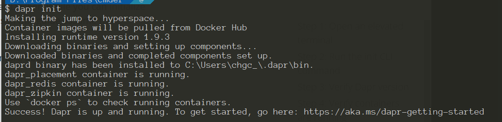
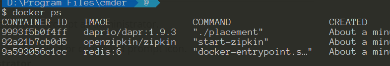
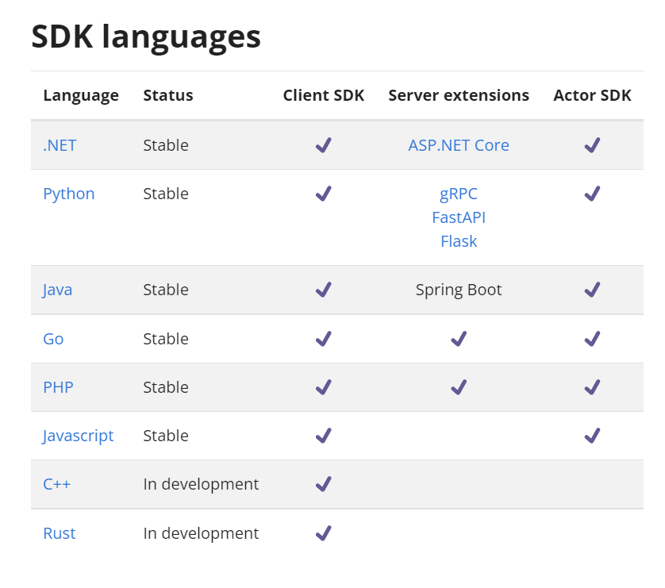
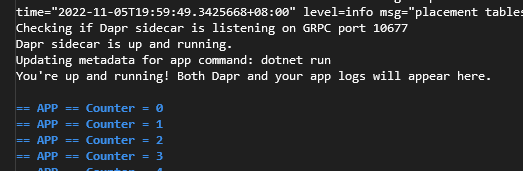
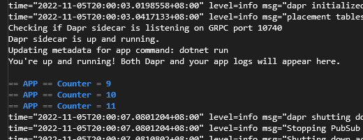
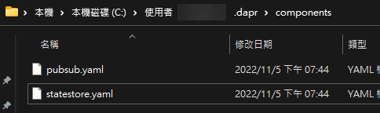

[Dapr] 使用 Dapr 開發 - Hello World
上一篇知道 Dapr 是什麼後，就要進入 Hello World 的世界了，著手寫看看第一個 Dapr 應用程式
環境安裝
如果沒有安裝過 Dapr CLI 的，可以先安裝，他可以任我們在開發環境上執行、啟動、管理和除錯 Dapr instances。雖然不是必要但建議開發環境要支援 Docker
步驟如下
-
初始化 Dapr。 此步驟會安裝最新的 Dapr 二進位檔和容器映射，以設定您的開發環境。
1
dapr init


環境多準備了這三個 containers，這時候我們就可以準備來開發第一個 Dapr 應用程式
第一個 Dapr 應用程式
Dapr 有提供不同語言的 SDK，方便使用者能自然且直覺的與 Dapr 做互動

這裡的範例我使用 .net core console 來練習
-
建立一個 console 程式
-
安裝
Dapr.Client套件 -
在
program.cs貼上這段程式碼1
2
3
4
5
6
7
8
9
10
11
12
13
14
15using Dapr.Client;
const string storeName = "statestore";
const string key = "counter";
var daprClient = new DaprClientBuilder().Build();
var counter = await daprClient.GetStateAsync<int>(storeName, key);
while (true)
{
Console.WriteLine($"Counter = {counter++}");
await daprClient.SaveStateAsync(storeName, key, counter);
await Task.Delay(1000);
}- line 6: 建立 dapr Client
- line 7: 取得
counterstate - line 13: 儲存值回
counterstate
-
試著用
dapr指令來執行程式1
dapr run --app-id DaprCounter dotnet run
會看到程式會跑起來，而且也能看到 Counter 的值被持續增加上去，而且當重啟程式後，也會保留上一次的結果繼續


使用 dapr run 時，--app-id 很重要，state management building block 是使用這個為 prefix 的值，所以第二次執行不是使用同一個 app-id 則會被視為不同的狀態
還記得一開始在 dapr init 時，有啟動幾個 container，其中一個是 redis，這也是 dapr 儲存狀態的地方，在上一篇也有提到每一個 building block 後面的元件是可以被抽換的，相關設定檔是透過 yaml 來設定，設定檔儲存位置如下
-
mac/Linux:
$HOME/.dapr/components -
windows:
%USERPROFILE%\.dapr\components
從圖片中可以看到有一個 statesotre.yaml 的檔案，內容會是這樣
1 | apiVersion: dapr.io/v1alpha1 |
- line 4: 這裡的 name 會對應到上面程式碼的 line 3
const string storeName = "statestore"; - line 15: 可透過
scopes來限定能存取此元件的應用程式 (app-id)